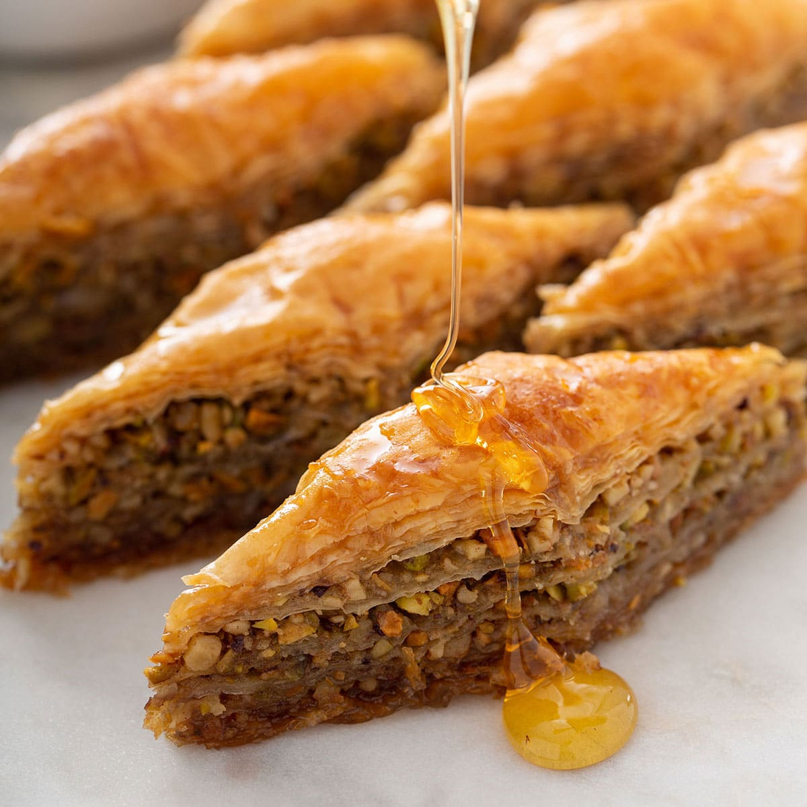

Greek Baklava Recipe

Description
Baklava is a delicious Greek dessert made up of layers of crispy phyllo dough,
honey and nuts that's sooo easy to make. This baklava recipe is simple and easy. Serve it
in cupcake papers. It freezes well, too.
Ingredients
- 1 pound chopped nuts
- 1 teaspoon ground cinnamon
- 1 (16 ounce) package phyllo dough
- 1 cup butter, melted
- 1 cup white sugar
- 1 cup water
- 1/2 cup honey
- 1 teaspoon vanilla extract
- 1 teaspoon grated lemon zest
Directions
-
Preheat the oven to 350 degrees F (175 degrees C). Butter a 9x13-inch baking dish.
-
Toss together nuts and cinnamon. Unroll phyllo and cut the whole stack in half to
fit the dish. Cover phyllo with a damp cloth while assembling the baklava, to keep
it from drying out.
-
Place 2 sheets of phyllo in the bottom of the prepared dish. Brush generously with
some of the melted butter. Sprinkle 2 to 3 tablespoons of the nut mixture on top.
Repeat layers until all ingredients are used, ending with about 6 sheets of phyllo.
-
Using a sharp knife, cut baklava into 4 long rows, then diagonally 9 times to make 36
diamond shapes. Be sure to cut all the way through to the bottom of the layers.
-
Bake in the preheated oven until golden brown and crisp, about 50 minutes.
-
While baklava is baking, combine sugar and water in a small saucepan over medium
heat and bring to a boil. Stir in honey, vanilla, and lemon zest; reduce heat and
simmer 20 minutes.
-
Remove baklava from the oven and immediately spoon syrup over it. Let cool completely
before serving. Store uncovered.